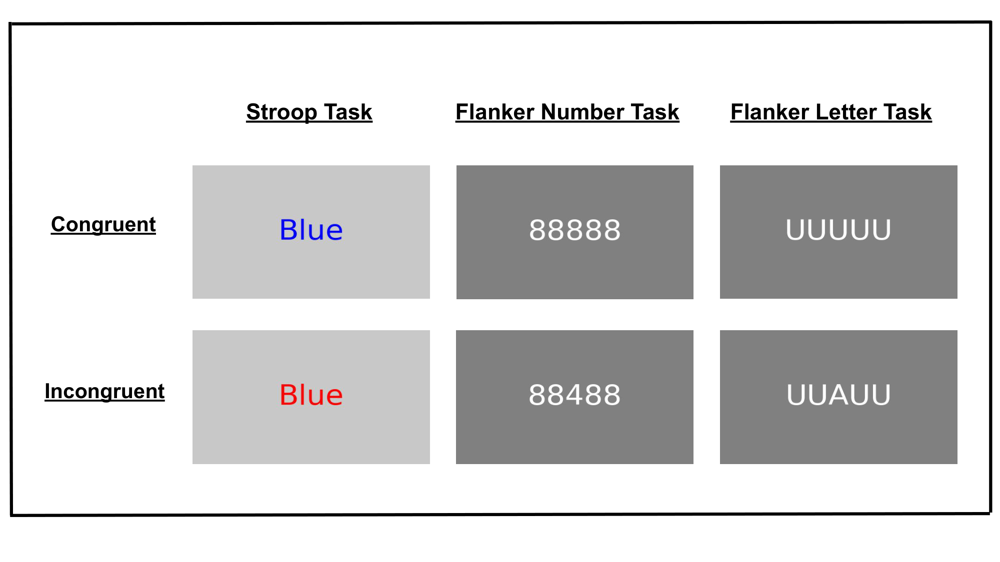
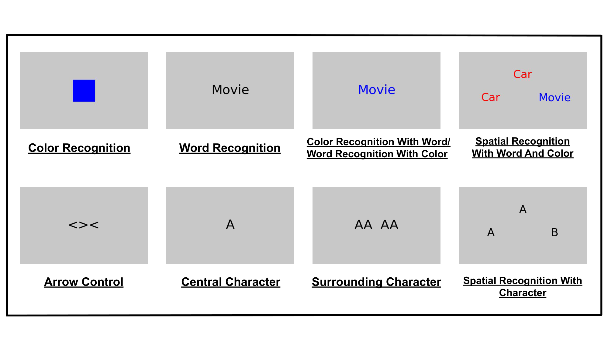
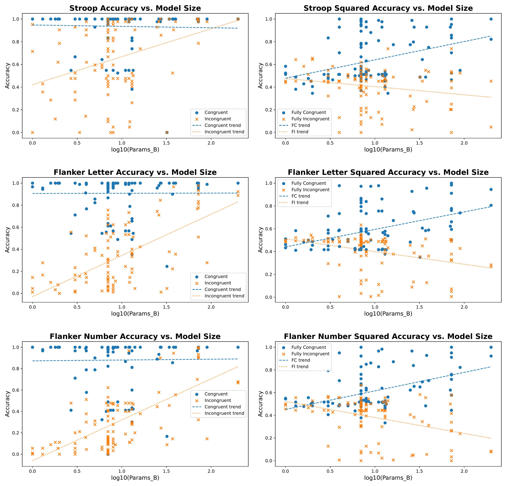

Human behavior is distinguished by its flexibility and goal-directedness: we can pursue novel, underspecified tasks, adapt to changing contexts, and manage competing objectives over time. At the core of these abilities lies cognitive control...
Vision-language models (VLMs) can integrate visual and textual information and have demonstrated strong performance on high-level reasoning benchmarks...
Related Work
Human Psychophysics
Cognitive control enables the regulation of thought and action in service of internal goals, particularly in situations involving conflict, ambiguity, or distraction...
Symbolic and Connectionist Models
A longstanding line of research in artificial intelligence has explored how control mechanisms can be embedded within integrated models of cognition...
Vision-language Models
There has been no prior attempt to directly evaluate the cognitive control capacities of vision-language models (VLMs)...
Methods

To evaluate cognitive control in VLMs, we adapted paradigms from experimental psychology...
Classic Conflict Tasks
We applied classic cognitive control tasks to evaluate models’ ability to resolve cognitive conflict...
Squared Tasks
In parallel, we adapted the "squared" design introduced by Burgoyne et al...
Control Tasks

To identify the specific sources of interference in each conflict task, we designed a control battery...
Results
Standard Tasks
Across all standard tasks, VLMs showed robust congruency effects...
Squared Tasks
Squared tasks further differentiated models into at-chance performers and those exposing persistent conflict sensitivity...
Control Tasks
For standard control tasks—where each component process was tested in isolation—models performed at or near ceiling...
Scaling and Resources

We find a strong correlation between model size and conflict resolution ability...
Discussion
Key Findings
Our results show that VLMs exhibit human-like congruency effects. More complex squared tasks revealed robust individual differences...
Limitations and Future Work
Future work could extend this framework to include a broader range of conflict types...
Conclusion
We showed that model performance closely aligns with human behavior under resource constraints and reveals robust individual differences...
Acknowledgments
We thank Han Zhang, Jacob Sellers, and Sarah Liberatore for their insights and comments...
BibTeX
@inproceedings{{wang2025psychophysics,
title={{Machine Psychophysics: Cognitive Control in Vision-Language Models}},
author={{Luo, Dezhi and Wang, Maijunxian and Wang, Bingyang and Zhao, Tianwei and Li, Yijiang and Deng, Hokin}},
booktitle={{NeurIPS}},
year={{2025}}
}}